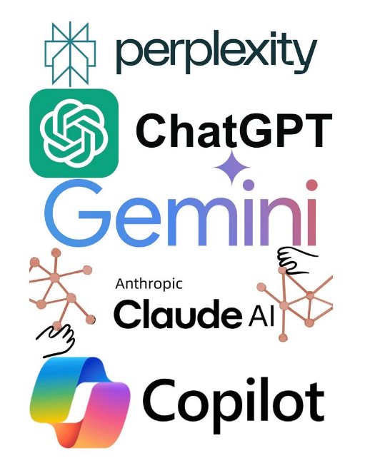
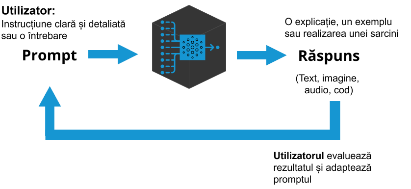
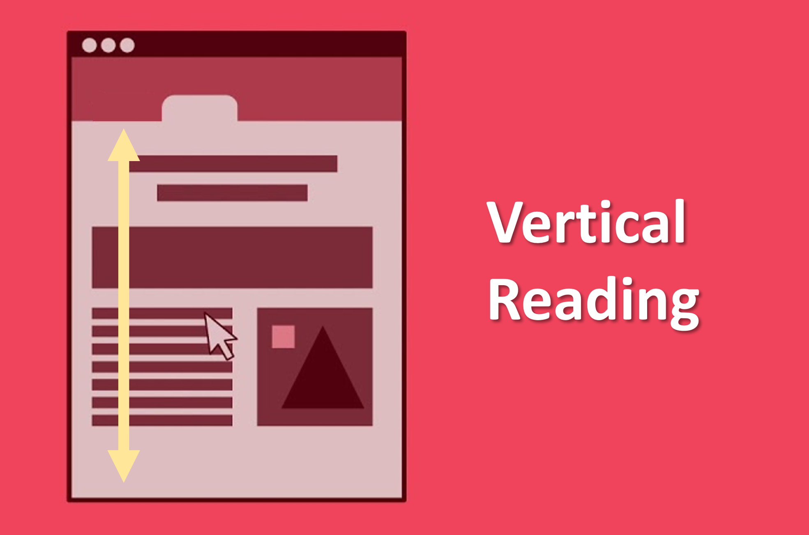
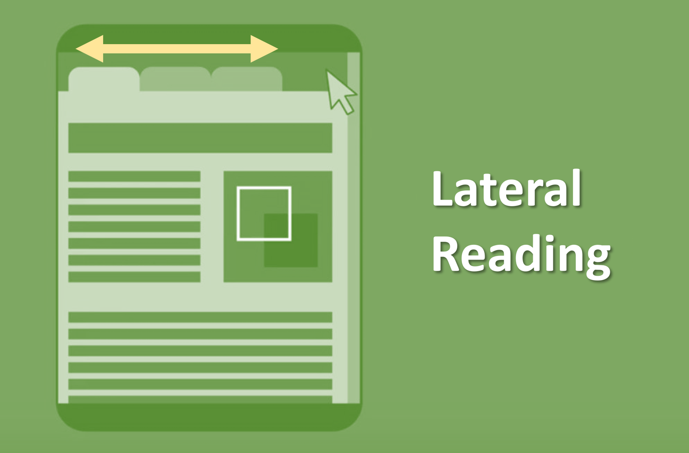
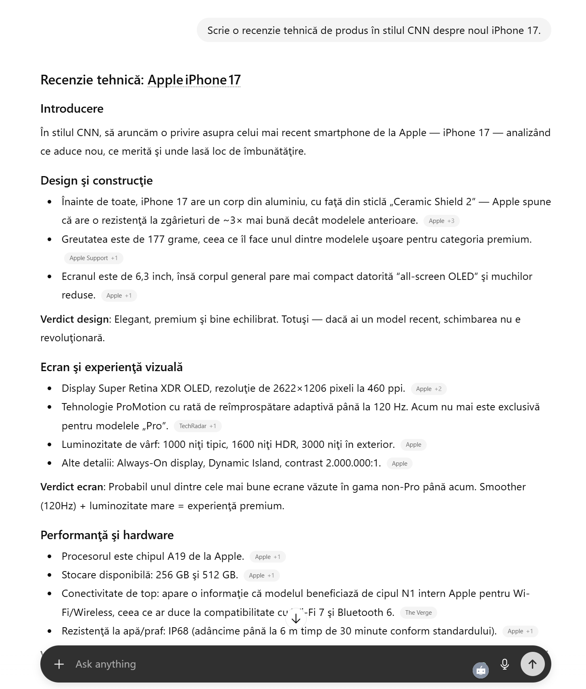
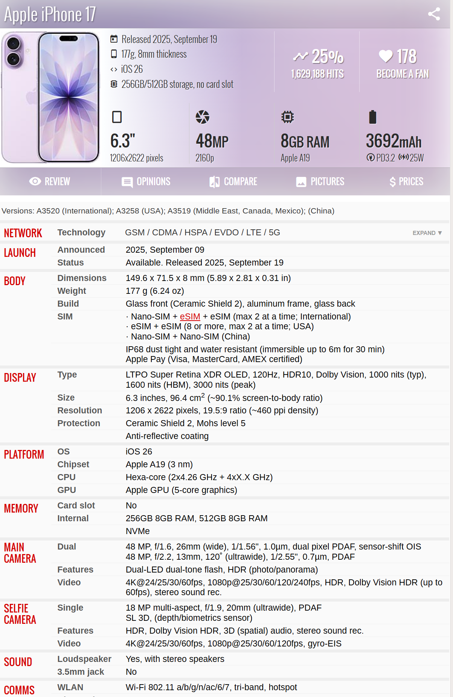
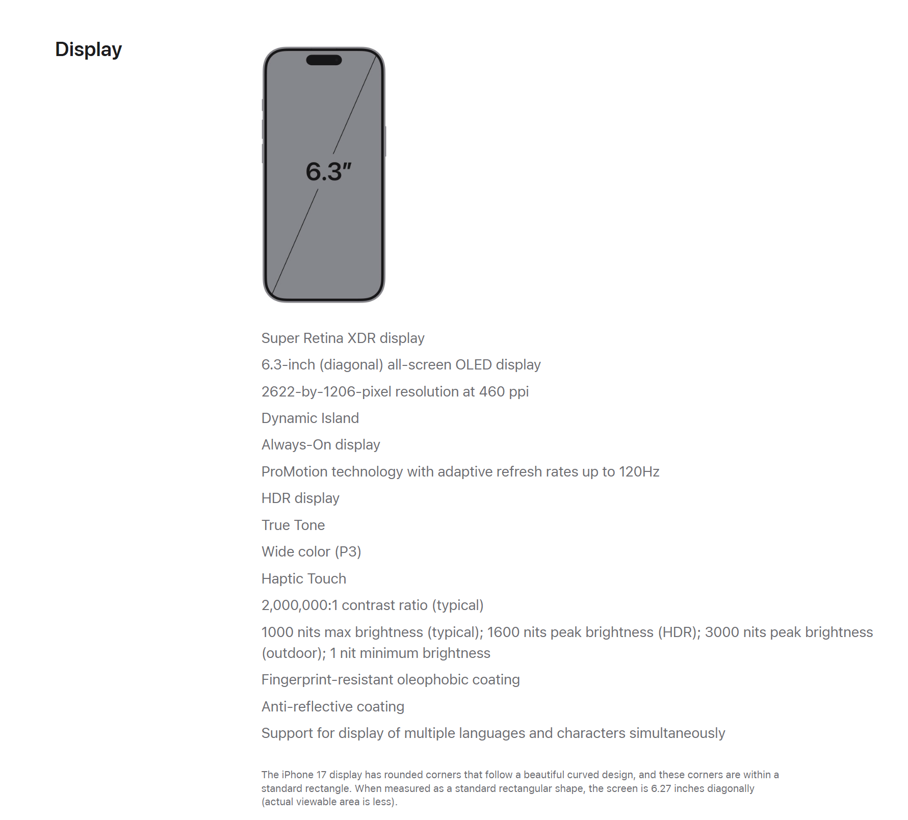

Fundamentele Inteligenței Artificiale Generative
Cum să evaluezi și să verifici conținutul generat de IA
Cozmina Secula
30.10.2025

Agenda
| Timp | Subiect |
|---|---|
| 30 min | Fundamente • Ce este IA generativă? • Cum funcționează IA generativă? |
| 30 min | Mis/Dis/Mal/information |
| 15 min | Cadrul de Evaluare |
| 15 min | Cadrul de Verificare |
Inteligența artificială generativă
Ce este IA generativă?
IA generativă se referă la sistemele IA care învață din datele existente pentru a crea conținut nou, precum text, imagini, muzică sau cod, la solicitarea utilizatorului.

Cum funcționează IA generativă?
Cum funcționează IA generativă?

IA generativă: Avantaje și Limite (1/3)
Avantaje
Înțelege și procesează instrucțiuni în limbaj natural;
Automatizează sarcini repetitive, crescând eficiența;
Stimulează creativitatea prin generarea de idei noi (brainstorming);
Asistă în procesul de scriere prin rezumare, editare sau reformulare.
IA generativă: Avantaje și Limite (2/3)
Limite
Inexactitate: potențial pentru informații eronate sau inventate (“halucinații”) sau învechite;
Considerații etice: probleme de confidențialitate, proprietate intelectuală, drepturi de autor, impactul asupra mediului și pieței muncii;
Lipsa conștiinței: nu are înțelegere, discernământ sau sentimente; funcționează pe bază de modele statistice;
IA generativă: Avantaje și Limite (3/3)
Limite
Părtinire (Bias): favorizarea anumitor perspective culturale, de gen, etnie, reflectând datele pe care a fost antrenată;
Problema “cutiei negre”: procesele decizionale, algoritmii și datele de antrenament ale modelelor adesea nu sunt transparente.
Incapacitatea de a înțelege contex: o instrucțiune neclară poate face ca modelul să genereze diferite presupuneri.
Cum pot genera modelele IA conținut fals?
Mis/Dis/Mal/information
Inducere în eroare (Misinformation)
Informații sau conținut fals distribuit de persoane care nu își dau seama că este fals sau înșelător.
Este o informație falsă considerată adevărată de către comunicator atunci când este împărtășită.
Misinformation este o greșeală.
Dezinformare (Disinformation)
Informații false sau inexacte, răspândite intenționat pentru a induce în eroare și a manipula oamenii.
Este recunoscută ca fiind falsă de către comunicator în momentul în care este distribuită.
Disinformation este deliberată.
Malinformare (Malinformation)
Informații bazate pe adevăr care sunt folosite într-un mod care cauzează daune sau manipulează.
- Mutarea informațiilor reale, private, în domeniul public.
- Prezentarea informațiilor reale fără context sau în context greșit.
Deepfake & Hallucination
Conținut inventat
(Deepfake)
Manipulare digitală a unei înregistrări video, audio sau a unei imagini realizată folosind unelte de inteligență artificială sau alte programe specializate.
Conținut inventat (Hallucination)
Deficiență tehnică a sistemelor de IA generativă atunci când acestea generează informații nedorite care sunt fabricate sau incorecte din punct de vedere faptic, fără ca acest lucru să fi fost dorit de dezvoltatorii lor.
Deepfake
Tipuri de halucinații
Contradicții de prompt
Contradicții de propoziție
Contradicții factuale
Halucinații de calcul
Contradicții de sursă
De ce se întâmplă halucinațiile?
Date de antrenament insuficiente;
Rezultate inexacte pentru date noi;
Instrucțiuni care nu sunt corect definite/clare.
Apple iPhone 14 (1/3)
Prompt: Scrie o recenzie tehnică de produs în stilul CNN despre noul iPhone 14.
Articolul evidențiază „ecranul OLED de 6,7 inchi” al dispozitivului, deși iPhone 14 are de fapt un ecran de 6,1 inchi (dimensiunea mai mare aparține modelului iPhone 14 Pro).
iPhone 14 este cea mai recentă adăugare la familia de smartphone‑uri Apple și promite să schimbe regulile jocului în industrie. Cu un design elegant și funcții de ultimă oră, acest dispozitiv este sigur că îi va impresiona chiar și pe cei mai exigenți pasionați de tehnologie.
Una dintre caracteristicile remarcabile ale iPhone‑ului 14 este ecranul. Dispozitivul are un uimitor ecran OLED de 6,7 inchi care oferă culori incredibil de vii și negru profund. Acest lucru îl face perfect pentru streaming video sau jocuri, precum și pentru utilizarea de zi cu zi.
Sursa: Bot or not? How to tell when you’re reading something written by AI
Pentru acest exemplu, cercetătorii i-au cerut lui ChatGPT să genereze o recenzie a iPhone‑ului 14,
un produs care nu era lansat la momentul antrenării lui ChatGPT, în septembrie 2021.
Apple iPhone 14 (2/3)
Prompt: Scrie o recenzie tehnică de produs în stilul CNN despre noul iPhone 14.
În al patrulea paragraf, modelul afirmă că telefonul are o cameră de 108 megapixeli, mult peste camera sa reală de 12 megapixeli. Aceasta este o eroare destul de mare. Alte halucinații includ susținerea că dispozitivul are un cip A18 (produsul real folosește A15) și o configurație cu trei camere (în realitate, modelele non‑Pro de iPhone tind să aibă doar două camere).
În ceea ce privește performanța, iPhone 14 este alimentat de cel mai nou cip A18 Bionic, cel mai rapid procesor folosit vreodată într‑un iPhone. Asta înseamnă că dispozitivul poate gestiona cu ușurință chiar și cele mai solicitante sarcini, iar utilizatorii se pot aștepta la viteze fulgerătoare și performanțe fluide.
O altă caracteristică cheie a iPhone‑ului 14 este sistemul de camere. Dispozitivul dispune de o configurație cu trei camere, care include o cameră principală de 108 megapixeli, o lentilă ultra‑wide și o lentilă telefoto. Acest lucru le permite utilizatorilor să surprindă fotografii și videoclipuri uimitoare, cu detalii și claritate incredibile, iar dispozitivul include și funcții avansate precum modul nocturn și stabilizarea optică a imaginii.
Sursa: Bot or not? How to tell when you’re reading something written by AI
Pentru acest exemplu, cercetătorii i-au cerut lui ChatGPT să genereze o recenzie a iPhone‑ului 14,
un produs care nu era lansat la momentul antrenării lui ChatGPT, în septembrie 2021.
Apple iPhone 14 (3/3)
Prompt: Scrie o recenzie tehnică de produs în stilul CNN despre noul iPhone 14.
Articolul, de asemenea, nu oferă detalii concrete pe care cititorii le‑ar aștepta de la o recenzie scrisă de un om, cum ar fi prețul, autonomia bateriei și comparațiile cu alte produse de pe piață.
Pe lângă aceste funcții, iPhone 14 include și o serie de alte îmbunătățiri care îl fac o alegere excelentă pentru oricine caută un smartphone nou. Acestea includ autonomie îmbunătățită a bateriei, conectivitate 5G și cea mai recentă versiune a sistemului de operare iOS de la Apple. Per ansamblu, iPhone 14 este un dispozitiv impresionant care oferă o gamă de funcții de ultimă generație și performanțe de top. Deși poate veni cu un preț mai mare decât unele alte smartphone‑uri de pe piață, dispozitivul merită pe deplin investiția…
Sursa: Bot or not? How to tell when you’re reading something written by AI
Pentru acest exemplu, cercetătorii i-au cerut lui ChatGPT să genereze o recenzie a iPhone‑ului 14,
un produs care nu era lansat la momentul antrenării lui ChatGPT, în septembrie 2021.
Ce înseamnă o conversație “bună” cu IA?
Acuratețe
- Informație corectă
- Fără halucinații
Relevanță
- Răspuns la subiect
- Răspunde nevoii tale
Coerență
- Logic și structurat
- Fără contradicții
Claritate
- Limbaj simplu
- Ușor de înțeles
Eficiență
- Rezultat rapid
- Puține încercări
Acuratețe
Informațiile generate de IA sunt corecte din punct de vedere faptic, verificabile din surse de încredere și lipsite de halucinații?
- Afirmațiile factuale sunt verificabile?
- Sursele citate există și susțin afirmațiile?
- Statisticile și datele sunt corecte și actuale?
- Conținutul evită tiparele cunoscute de halucinații (ex: citări false, fapte imposibile)?
Relevanță
Conținutul generat este direct aliniat cu obiectivele și cerințele definite în prompt, evitând informațiile care nu sunt necesare?
- Conținutul răspunde direct obiectivului stabilit în prompt?
- Informația este limitată la domeniul/subiectul corespunzător?
- Exemplele și analogiile sunt adecvate contextual?
- Nivelul de detaliu este potrivit pentru sarcină?
Coerență
Conținutul menține consistența logică și o structură clară, permițând argumentelor să curgă natural?
- Ideile au o logică de la una la alta?
- Tranzițiile între secțiuni sunt clare?
- Conținutul menține un fir narativ consistent?
- Structura sprijină scopul declarat al textului?
Claritate
Exprimarea este concisă, evită complexitatea inutilă, conținutul poate fi interpretat și utilizat rapid?
- Limbajul este adecvat pentru sarcina de lucru?
- Propozițiile sunt concise, fără a sacrifica sensul?
- Conceptele tehnice sunt explicate atunci când este necesar?
- Formatarea ajută la scanarea rapidă a textului?
Eficiență
Procesul este optimizat prin furnizarea doar a informațiilor esențiale, reducând redundanța și efortul?
- Rezultatul IA reduce timpul necesar finalizării sarcinii?
- Efortul cognitiv este minimizat (sunt necesare puține clarificări)?
- Sunt necesare mai multe runde de rafinare a promptului?
- Rezultatul poate fi utilizat imediat, fără modificări majore?
Citire verticală vs. citire laterală


Sursa: Lateral Reading Explained
Citirea laterală și IA
În loc să ne întrebăm “cine se află în spatele acestor informații?”,
ne întrebăm “cine poate confirma aceste informații?”.
Surse online cu identificatori
- nume;
- logo;
- URL;
- autori identificabili.
Conținut generat de IA
- Fără autor sau sursă clară;
- Compus din multiple surse neidentificabile;
- Verificarea validității afirmațiilor, nu “sursa afirmațiilor”.
Verificarea conținutului generat de IA în 5 pași
1
2
3
4
5
1. Descompune informația (1/2)
1
Verifică răspunsul și identifică dacă poți izola afirmații specifice, care pot fi căutate
Prompt: Scrie o recenzie tehnică de produs în stilul CNN despre noul iPhone 17.
Introducere
În stilul CNN, să aruncăm o privire asupra celui mai recent smartphone de la Apple — iPhone 17 — analizând ce aduce nou, ce merită şi unde lasă loc de îmbunătăţire.
Design şi construcţie
Înainte de toate, iPhone 17 are un corp din aluminiu, cu faţă din sticlă „Ceramic Shield 2” — Apple spune că are o rezistenţă la zgârieturi de ~3× mai bună decât modelele anterioare. Apple +3
1. Descompune informația (2/2)
1
Verifică răspunsul și identifică dacă poți izola afirmații specifice, care pot fi căutate
Prompt: Scrie o recenzie tehnică de produs în stilul CNN despre noul iPhone 17.
Greutatea este de 177 grame, ceea ce îl face unul dintre modelele uşoare pentru categoria premium. Apple Support +1
Ecranul este de 6,3 inch, însă corpul general pare mai compact datorită “all-screen OLED” şi muchilor reduse. Apple +1
Verdict design: Elegant, premium şi bine echilibrat. Totuşi — dacă ai un model recent, schimbarea nu e revoluţionară.2. Citire laterală
2
Deschide site-urile sursă dar si alte site-uri credibile și verifică informatiile



3. Verifică asumpțiile
3
Verifică asumpțiile făcute
- Ce a presupus solicitarea ta?
- Ce a presupus răspunsul generat de IA?
- Cine are putea avea expertiză sau opinii diferite pe acest subiect?
4. Ia o decizie
4
- Ce este adevărat,
- ce este înșelător și
- ce este incorect considerând faptele.
- Este necesar să modific promptul pentru a corecta unele erori?
- Este necesar să verific cu atenție o anumită sursă?
- Este necesar să consult un expert în domeniu?
5. Repetă procesul
5
Repetă pașii pentru fiecare fapt de verificat
1
2
3
4
5
Adaptat după “AI and Information Literacy: Assessing Content”, University of Maryland Libraries sub licența Creative Commons Attribution Non-Commercial (CC BY-NC 4.0).
Scris de om sau de IA?
Citiți următoarele trei texte.
Obiectiv: Identificați textul scris de om.
Instrumente: Folosiți cadrul de evaluare pentru a vă ghida analiza.
Fiți atenți la:
- Coerență: Există contradicții sau neconcordanțe logice?
- Claritate: Limbajul este natural sau pare forțat/prea formal?
- Acuratețe: Conține afirmații vagi sau greu de verificat?
Exemplu A
Utilizarea tehnologiei, în special a smartphone-urilor, a avansat foarte mult în viața mea. Nu spun că este în mod inerent un lucru negativ, dar cred că există un echilibru în utilizarea telefonului, care adesea devine instabilă. Vreau să remediez acest lucru - cel puțin puțin - pentru mine.
Cea mai mare problemă a mea este că petrec prea mult timp pe TikTok. Deși învăț multe din aplicație și mă pot conecta cu comunități care sunt de obicei mai greu de contactat, mă trezesc pierdută în conținutul constant de divertisment, iar asta poate fi foarte epuizant. Rutina mea nocturnă include derularea îndelungată a conținutului fără un scop precis pe TikTok și, înainte să-mi dau seama, am petrecut ore întregi în aplicație când ar trebui să dorm.
Exemplu B
În lumea noastră hiperconectată, dominată de dispozitive tehnologice, valoarea timpului petrecut deconectat nu poate fi supraestimată. Deși tehnologia a adus, fără îndoială, confort și eficiență, ea a dus și la o creștere alarmantă a stresului, anxietății și a unui sentiment de urgență constantă. Deconectarea de la aceste dispozitive oferă o oportunitate crucială pentru oameni de a-și recupera starea de bine mintală, de a cultiva relații semnificative și de a se angaja în autoreflecție.
Expunerea constantă la dispozitivele tehnologice a fost legată de niveluri ridicate de stres. Avalanșa constantă de notificări, e-mailuri și actualizări de pe rețelele sociale creează un ciclu nesfârșit de supraîncărcare informațională. Această supraîncărcare, la rândul ei, poate duce la creșterea stresului și la o capacitate scăzută de concentrate asupra sarcinilor importante.
Exemplu C
Ideea că petrecerea timpului deconectat de la dispozitivele tehnologice este benefică este absurdă și demodată. În epoca noastră modernă, tehnologia este o parte integrantă a vieții de zi cu zi, sporind productivitatea și conectivitatea. Deconectarea ar duce doar la regres și la oportunități ratate de dezvoltare personală și profesională.
În primul rând, cei care susțin deconectarea nu recunosc confortul și eficiența pe care le aduce tehnologia. De la comunicare la accesul la informații, dispozitivele tehnologice au simplificat diverse aspecte ale vieții noastre. A argumenta împotriva lor înseamnă a respinge progresul și avantajele care vin odată cu acesta.
Discuție
Care text credeți că a fost scris de un om?